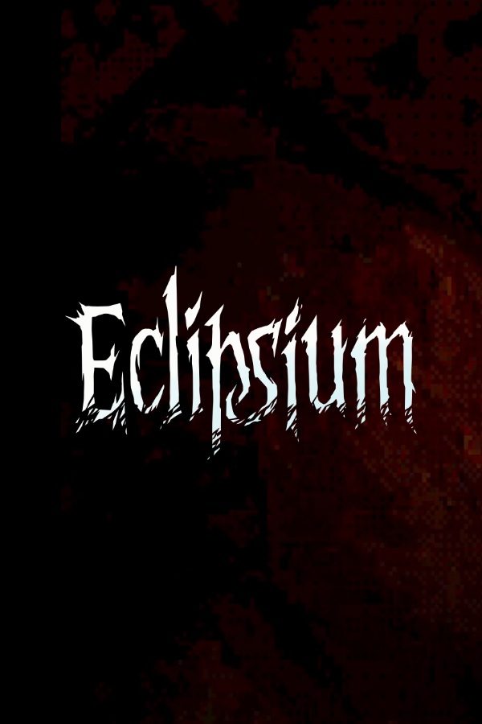

Eclipsium
Every archived year-end list appearance, including placement and points earned.
About the Game
Eclipsium is a first-person horror game where you play as the desperate Wanderer. In search of Her, his path leads through hellish tombs, cathedrals of flesh and even through space, immolating himself and sacrificing anything to achieve his goal.Don’t stopThere is no safety or comfort in Eclipsium. Let the pale light guide you through, as every place hides its own path to escape.Enter the spiralEverything fades and senses dull in this endless darkness. But with you remains your power - a twisting, transmuting hand, ready to carve a way through whatever stands before you.Find herHer weak light, now little more than a whisper of a memory, pulls you forward. Even if it’s a lure, it remains your only hope inside the anguished eclipse.
| Released | 2025-09-19 |
|---|---|
| Developer | Housefire |
| Publisher | CRITICAL REFLEX |
| Genres | Adventure, Indie |
| Platforms | PC |
SingleplayerSteam AchievementsFull controller supportAtmosphericFirst-PersonHorrorExplorationPixel GraphicsDarkRetroMystery3D
Where to Buy
Game information provided by RAWG.
Points by Year
List History
| Year | Source | List | Placement | Points |
|---|---|---|---|---|
| 2025 | NPR | The best games of 2025, picked by NPR's staff | Unranked | 1 |